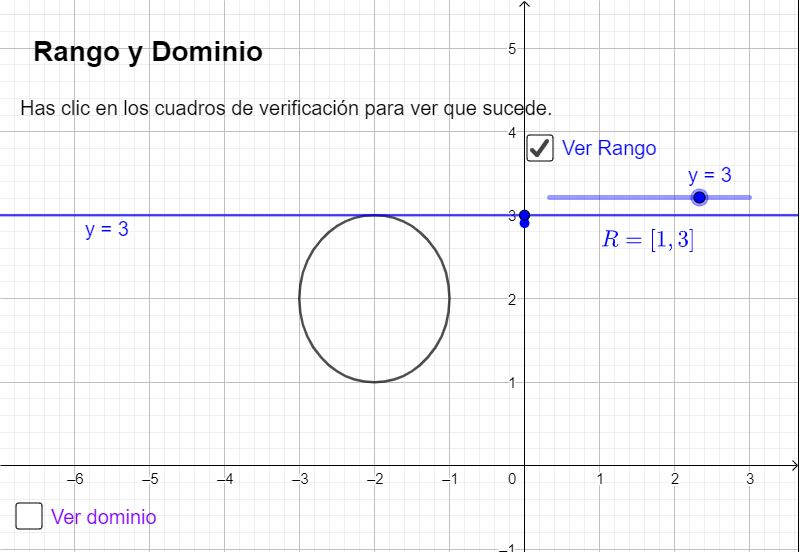

Título de la obra:
Relación
Autor:
Laura Reinoso
Código JavaScript para el libro: Joel Espinosa Longi, IMATE, UNAM.
Recursos interactivos: DescartesJS
Fuentes: Lato y UbuntuMono
Fórmulas matemáticas: $\KaTeX$
LICENCIA
 Creative Commons Attribution License 4.0.
Creative Commons Attribution License 4.0.
Tabla de contenido
Definición de Relación
1. Definición de Relación
El verbo RELACIONAR equivale a ASOCIAR o HACER CORRESPONDER los elementos de un conjunto con los de otro conjunto. Entonces la palabra relación significa asociación o correspondencia.
Dependiendo de la naturaleza de los conjuntos podemos representarlos de muchas formas como lo es el diagrama sagital, con tablas de datos, en el plano cartesiano entre otras.
En este libro estudiaremos las formas en las que se representan las relaciones e identificaremos en ellos el concepto de conjunto de partida, conjunto de llegada, Dominio, Rango, imagen y preimagen.
A continuación tiene un objeto interactivo en el que debe completar las frases que tienen que ver con el concepto de Relación. Haga clic en la imagen para abrir el recurso.
Representación de las relaciones
Diagrama Sagital
Se usa cuando los conjuntos que vas a representar son finitos.
Para realizar un diagrama sagital puedes utilizar los pasos dados a continuación:
Paso 1: Dibujar dos óvalos, estos representarán los conjuntos relacionados.
Por convención el conjunto de la izquierda es el conjunto de partida y el conjunto de la derecha es el conjunto de llegada.
Paso 2: Se escriben los elementos de cada conjunto.
Paso 3: Se identifica la relación que se estable entre un conjunto y el otro.
Paso 4: Se dibujan flechas, saliendo de los elementos del conjunto de partida y
llegando a uno de los elementos del conjunto de llegada.
En una fiesta hay cuatro personas: Juan, Ximena, María y Jorge. Se sabe que Juan es amigo de María y que Ximena es amiga de María y de Jorge. ¿Cómo se puede representar la amistad de estas personas en un diagrama Sagital?
Haga clic en la imagen para observar la representación de este conjunto mediante un diagrama sagital.
Ejemplo 2:Se tienen 2 conjuntos llamados $A$ y $B$. Represente la relación de A en B. Si se tiene que: $A=\{-1,0,4\}$ , $B=\{-1,0,1,2\}$ y la relación es que el elemento de A al cuadrado es igual al elemento de B.
Haga clic en la imagen para observar la representación de este conjunto mediante un diagrama sagital.
Si $C=\{-4,-3,-2,-1,0,1\}$ y $D=\{-1,0,1,2,3,4\}$ y $R=\{(x,y) / x ∈ C ∧ y ∈ D ∧ y=|x|\}$. Represente la relación.
Haga clic en la imagen para observar la representación de este conjunto mediante un diagrama sagital.
Plano cartesiano
Las gráficas en el plano cartesiano son el método favorito para representar relaciones entre dos conjuntos infinitos de números reales, aunque se puede utilizar para todo tipo de conjuntos.
Si ambos conjuntos son no numéricos, se dibuja el primer cuadrante del plano cartesiano. Las marcas del semieje $x$, tienen los elementos del conjunto de partida, y las marcas del semieje $y$, contiene los elementos del conjunto de llegada.
Si ambos conjuntos son numéricos, no es necesario que los ejes estén marcados con todos los elementos relacionados, puesto que se puede aproximar con facilidad la posición de cualquier pareja de coordenadas.
Finalmente, independientemente del tipo de conjuntos, se ubica en el plano los puntos de coordenadas $(x,y)$ tales que $x$ pertenezca al conjunto de Partida, y pertenezca al conjunto de llegada y $x$ se relacione con $y$.
Ejemplo 1:En una fiesta hay cuatro personas: Juan, Ximena, María y Jorge. Se sabe que Juan es amigo de María y que Ximena es amiga de María y de Jorge. ¿Cómo se puede representar la amistad de estas personas en el plano cartesiano?
Haga clic en la imagen para observar la representación de este conjunto en el plano cartesiano.
Se tienen 2 conjuntos llamados A y B. Represente la relación de A en B. Si A={-1,0,4} , B={-1,0,1,2} y la relación es que el elemento de A al cuadrado es igual al elemento de B.
Haga clic en la imagen para observar la representación de este conjunto en el plano cartesiano.
Ejemplo 3:Si $C=\{-4,-3,-2,-1,0,1\}$ y $D={-1,0,1,2,3,4}$ y $R=\{(x,y) / x∈D ∧ y∈D ∧y=|x|\}.$ Represente la relación.
Haga clic en la imagen para observar la representación de este conjunto en el plano cartesiano.
Cuando el conjunto de partida y de llegada, son los números reales, se analiza la fórmula de la función.
Si es conocida, se busca como graficar esa función en especial.
Si es desconocida se siguen los siguientes pasos:
Paso 1: Se tabulan algunos puntos que cumplan con la condición dada.
Paso 2: Se grafican los puntos de la tabla en el plano cartesiano.
Paso 3: Se unen los puntos de la mejor manera que se pueda.
Dado que nos es imposible analizar todas las relaciones con sus formas características, en este libro se graficará con el segundo método.
$R=\{(x,y) / x,y ∈ R ∧ x²+y²=1\}$. Represente la relación. Antes de comenzar, es importante aclarar que se buscan todas las parejas de puntos tales que el cuadrado de la primera coordenada más el cuadrado de la segunda sea igual a uno. Esto se cumple en el círculo que tiene centro en el punto (0,0) y tiene un radio de una unidad.
Haga clic en la imagen para observar la representación de este conjunto en el plano cartesiano.
$R=/{(x,y) / x,y ∈ R ∧ y=2x/}$. Represente la relación. Antes de comenzar, es importante aclarar que se buscan todas las parejas de puntos tales que el elemento del segundo conjunto sea igual al doble del elemento del primer conjunto. .
Haga clic en la imagen para observar la representación de este conjunto en el plano cartesiano.
Tabla de datos
Se usa frecuentemente para representar todo tipo de relaciones, tanto el producto de estudios estadísticos, como los resultados de un laboratorio o simplemente para ordenar parejas de datos. También se usa porque es más fácil de elaborar y de entender que un diagrama sagital.
¿Cómo se realiza una tabla de datos?
Paso 1: Identificar la variable independiente y la variable dependiente. Esto ayudará a identificar la columna de la izquierda y la columna de la derecha, que representan los conjuntos de partida y de llegada en ese mismo orden.
Paso 2: Se marca la primera fila de ambas columnas con el nombre del conjunto que le corresponde.
Paso 3: Se llenan las filas con los datos del problema.
En una fiesta hay cuatro personas: Juan, Ximena, María y Jorge. Se sabe que Juan es amigo de María y que Ximena es amiga de María y de Jorge. ¿Cómo se puede representar la amistad de estas personas?
Haga clic en la imagen para observar la representación de este conjunto mediante la utilización de una tabla de datos.
Ejemplo 2:Se tienen 2 conjuntos llamados A y B.Represente la relación de A en B. Si A={-1,0,4} , B={-1,0,1,2} y la relación es que el elemento de A al cuadrado es igual al elemento de B.
Haga clic en la imagen para observar la representación de este conjunto mediante la utilización de una tabla de datos.
Si $C=\{-4,-3,-2,-1,0,1\}$ y $D=\{-1,0,1,2,3,4\}$ y $R=\{(x,y) / x∈D ∧y∈D ∧y=|x|\}$. Represente la relación.
Haga clic en la imagen para observar la representación de este conjunto mediante la utilización de una tabla de datos.
Ejemplo 4:$R=\{(x,y) / x,y ∈ R ∧ x²+y²=1\}$. Represente la relación. Antes de comenzar, es importante aclarar que se buscan todas las parejas de puntos tales que el cuadrado de la primera coordenada más el cuadrado de la segunda sea igual a uno. Esto se cumple en el círculo que tiene centro en el punto (0,0) y tiene un radio de una unidad.
Haga clic en la imagen para observar la representación de este conjunto mediante la utilización de una tabla de datos.
$R=\{(x,y) / x,y ∈ R ∧ y=2x\}$. Represente la relación. Antes de comenzar, es importante aclarar que se buscan todas las parejas de puntos tales que el elemento del segundo conjunto sea igual al doble del elemento del primer conjunto. .
Haga clic en la imagen para observar la representación de este conjunto mediante la utilización de una tabla de datos.
Notación de conjunto
La notación de conjunto es la manera más compleja de representar una relación. Si los conjuntos son finitos se puede usar la notación de conjunto por extensión o por comprensión.
Si los conjuntos son infinitos, la notación por compresión se hace más conveniente que la notación por extensión.
Notación por extensión:
Se nombra al conjunto con una letra Mayúscula y se escriben entre llaves las parejas de elementos que pertenecen a la relación
Ejemplo 1
En una fiesta hay cuatro personas: Juan, Ximena, María y Jorge. Se sabe que Juan es amigo de María y que Ximena es amiga de María y de Jorge. ¿Cómo se puede representar la amistad de estas personas como un conjunto en extensión?
$R=\{(Juan,Maria),(Maria,Juan),(Ximena,María),$ $(María,Ximena),(Ximena,Jorge),(Jorge,Ximena)\}$
Ejemplo 2
Se tienen 2 conjuntos llamados $A$ y $B$. Represente la relación de $A$ en $B$. Si $A=\{-1,0,4\}$ , $B=\{-1,0,1,2\}$ y la relación es que el elemento de A al cuadrado es igual al elemento de B.
$R=\{(-1,1),(0,0)\}$
Notación por comprensión:
Se escribe por lo general de la siguiente forma
$R=\{(x,y) / x ∈ A ∧ y ∈ B ∧ condiciónC \}$
Se lee como: La relación está compuesta de todas las parejas ordenadas de la forma $(x,y)$ tales que $x$ pertenecen al conjunto $A$, y $y$ pertenece al conjunto $B$, y se cumple la $condición$C.
Ejemplo 1Se tienen 2 conjuntos llamados $A$ y $B$.
Represente la relación de $A$ en $B$. Si $A=\{-1,0,4\}$ , $B=\{-1,0,1,2\}$ y la relación es que el elemento de $A$ al cuadrado es igual al elemento de $B$.
$R=\{(x,y) | x ∈ A ∧ y ∈ B ∧ y=x²\}$
Ejemplo 2En una fiesta hay cuatro personas: Juan, Ximena, María y Jorge. Se sabe que Juan es amigo de María y que Ximena es amiga de María y de Jorge. ¿Cómo se puede representar la amistad de estas personas como un conjunto por comprensión?
Se enuncia el conjunto de las personas :$P$
$P={Juan,María,Ximena,Jorge}$
La relación quedaría como:
$R=\{(x,y)| x,y ∈ P ∧ x $ es amigo de $y\}$
Fórmula
Cuando se conoce el conjunto de partida y de llegada. También se puede usar una fórmula o una regla de correspondencia, para denotar la relación.
Cuando se conoce el conjunto de partida y de llegada. También se puede usar una fórmula o una regla de correspondencia, para denotar la relación.
Ejemplos
La Relación $y=-1x$ en $R$, significa lo mismo que
$R=\{ (x,y) | x,y ∈ R ∧ y=-1x\}$
La Relación $y²+x=-1$ en $R$, significa lo mismo que
$R=\{ (x,y) | x,y ∈ R ∧ y²+x=-1\}$
Conceptos
Dominio: Es el conjunto de todos los elementos que hacen parte del conjunto de partida y se encuentran relacionados.
Rango: Es el conjunto de todos los elementos que hacen parte del conjunto de llegada y se encuentran relacionados.
Imagen: Cada elemento $x$ que hace parte del dominio tiene una relación con un elemento en el conjunto de llegada a quien se le llama imagen de $x$.
Preimagen: Cada elemento $y$ que hace parte del rango tiene una relación con un elemento en el conjunto de partida a quien se le llama preimagen de $y$.
Conjunto de partida: Se identifica en el diagrama sagital por ser el conjunto del que salen las flechas. En el plano cartesiano, va a determinar el eje $x$. En la tabla va a ser la columna de la izquierda o de la variable independiente. En la fórmula generalmente se le nombra con la letra $x$.
Conjunto de llegada: Se identifica en el diagrama sagital por ser el conjunto al que llegan las flechas. En el plano cartesiano, va a determinar el eje $y$. En la tabla va a ser la columna de la derecha o de la variable dependiente. En la fórmula generalmente se le nombra con la letra $y$.
Ejercicios
Identifique en el siguiente applet los conceptos anteriores.
Identifique en el siguiente applet el dominio y el rango para la función expresada.
